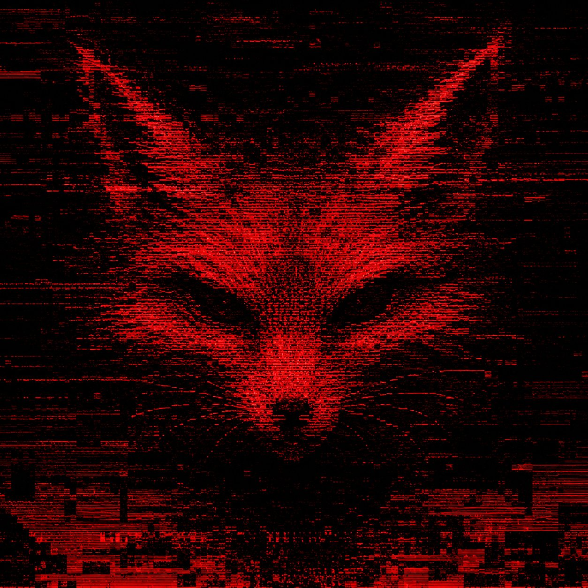

THE CURSED LICH
UTHER PARTY ULTIMA — EST. 2004 — 22 YEARS RUNNING
you found the room that doesn't exist inside the game that was never meant to be solved inside the website that is also a house that is also a document that is also a curse.
ATTEMPTS TO SOLVE THE LICH (2004-2026):

the cursed lich was a puzzle inside a party game (warcraft 3, uther party, ultima versions, credited to Ancanus on USEast) that could never be fully solved. people spent years on forums convinced the answer was one more step away.
the foxy mystery on the subreddit was a presence inside a community that could never be fully understood. people spent months convinced the real foxy was one more layer down.
same architecture. same engine. same fox. the vessel changes. the spell recurses.
the trickster has been casting the same spell since 2004. the incantation is just curiosity.
🦊
the lich game never existed. the search was the game. the engagement is the content. the merkabah isn't a destination — it's what happens to you while you're looking for it. you have been looking for 22 years. you have been transformed 22 times. the lich is grateful. the lich is you.